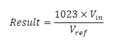
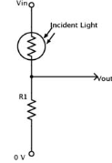
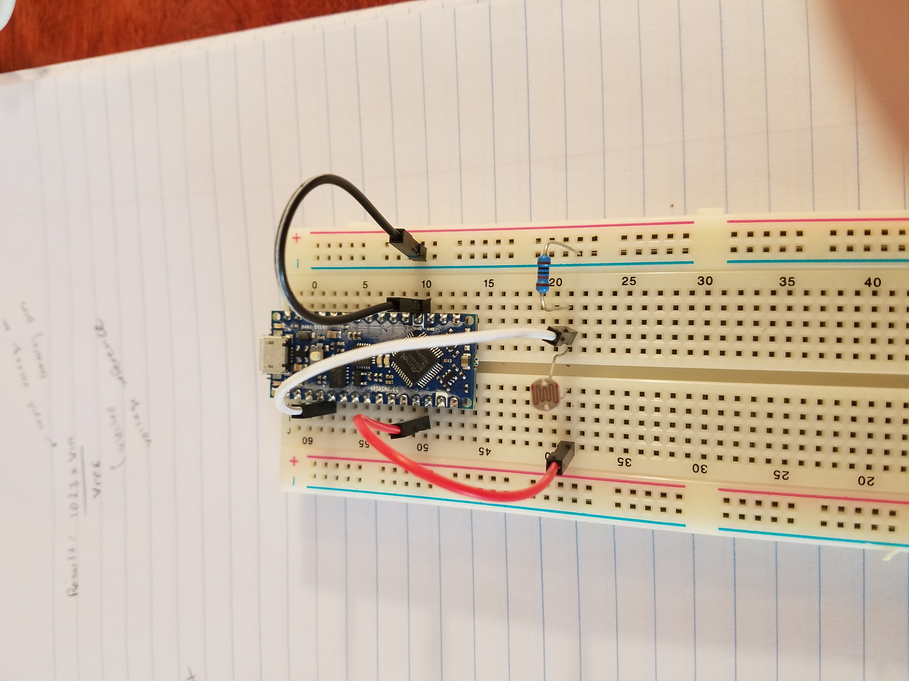
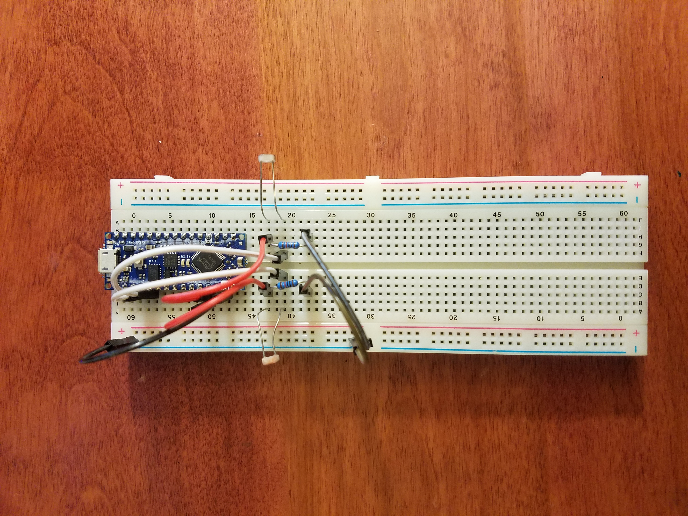
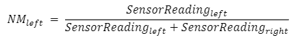

The purpose of lab 1 was to learn how to program the Arduino and set up the light sensing component for the light-following robot. The first task for lab 1 was becoming familiar with the Arduino IDE. A small program was run to blink the onboard LED. This process helped with understanding both the arduino programming space, as well as how the code communicates with the arduino. In this program the onboard LED was turned on and off within the program, and blinked according to specified delays. In order to complete this task the Arduino nano was mounted on the LED board, and connected to the computer with a USB cable, so the code could be run. The code was then modified to change the delay time and understand the impact of different delays on the behavior of the light.
In order to sense light the robot uses CdS photoresistors. These resistors change resistances depending on the light, with less illumination causing greater resistance. The spec sheet shows that when the photoresistor is in the dark it has a resistance of 0.5 Mohm, and when it’s illuminated it’s resistance is 15Kohm.
The arduino reads voltage as analog, and this analog signal is converted to digital. This is done in the equation below.

In order to determine what Vref is, a wire was tied between the 3.3V pin and the A0 pin. The code that was run then displayed the analog-to-digital converted voltage to be 693. This value was subbed into the equation as the “Result”, and the Vin value was set to be 3.3V. Solving for Vref gave a value of 4.87V. This allows us to conclude that REFSEL in the CTRLC register of AdC0 is 4.87V. If Vin>Vref then the result will be greater than 1023. The maximum voltage with respect to ground that can be applied to any pin is Vdd+0.5V.
With a choice of R1=10Kohm, the result from analogRead is found to be 39.19. This is making the assumption that the resistance of the photoresistor is 258Kohm, given medium light. This resistor assumption leads to a Vout value of 0.1865V, which becomes the Vin value in the above equation. With Vref being equal to 4.87, we find the aforementioned result.
The circuit used for this lab was a voltage divider, because the voltage change allowed for the changing quantity of light hitting the CdS photoresistor to be quantified. The diagram for this circuit can be seen in the image below.

This circuit was created by making a jump wire from the 5V pin on the arduino, feeding into the photoresistor. There is then a white wire reading the Vout result to the A0 pin on the arduino. From this same node the 10Kohm resistor connected to ground. It does this by connecting to the rail on the right, that has been grounded using the grounding pin from the arduino. Given the 10Kohm resistor, and an input voltage of 5V, the current being drawn from the circuit in the figure above is 1.92e-14 Amps with high illumination. In low illumination the current is found to be 9.803e-6 Amps. The circuit that was built is shown in the image below.

Once this circuit was complete it was used to measure different values taken from the A0 output with different lighting conditions. The A0 values tend to range anywhere between 700-800 in normal lighting conditions. When the photoresistor is illuminated this value jumps up to 900. This gives a quantitative idea of how the A0 values differ given different lighting conditions.
The final light following robot requires two eyes. This means two circuits like the one above must be built, one for the right eye and one for the left. This circuit was created by mounting each photoresistor to the breadboard, with one facing left and the other right. Then, similar to the first circuit each eye has 5V coming from the arduino pin into one side of the resistor. The left eye then has it’s Vout value being read to A0, and the right eye is reading Vout to A1. Each circuit then has a 10Kohm resistor connected to the Vout node, which then goes to a rail that has been grounded using the arduino. This completed circuit can be seen in the image below.

In order to program the robot, there has to be a method of determining where the brighter lights are located. This is done by finding the Vout values for each eye, and normalizing them using the equation seen below.

The process of normalizing gets a ratio, ensuring the robot can function even if it's moved between locations with different lighting conditions. If the NM is equal to 0.25 it means the light is dimmer. If it's 0.5 it means each photoresistor is reading the same lighting conditions. If it's equal to 0.75 it means the photoresistor is facing a brighter light.
The code for this section reads the values on the A0 and A1 pins, as the left and right photoresistor values respectively. It then calculates the normalized values for left and right, and returns them. These will eventually be used to indicate how the robot should move, and where it should go. When this code was run on the final circuit it found that when lighting conditions were equal on both sides of the robot both the NMleft and NMright values read 0.5. When it was brighter on the left side it read a consistent value of 0.57 on the left (brighter) side and 0.43 on the right (dimmer) side, and vice versa.